Guest rooms used to be an afterthought, a leftover bed in a room that doubled as storage for everything else.
That's shifted. More homes are treating the guest room as a genuine small retreat, worth the same consideration as any other room in the house.
These 10 trends cover what's actually driving that shift and how to apply it yourself.

Why Guest Rooms Are Finally Getting Attention
More people are hosting overnight guests regularly, family, remote-working friends, extended stays, which makes a genuinely comfortable guest room a bigger priority than it used to be.
A guest room has also become one of the few rooms in the house that can be styled purely for someone else's comfort, without the daily-use compromises every other room requires.
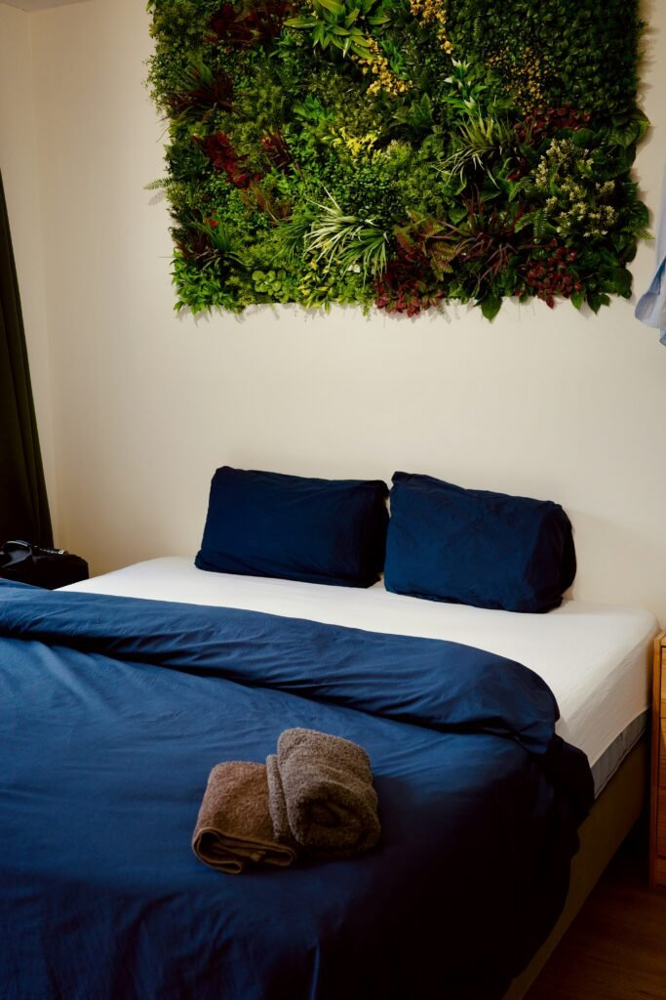
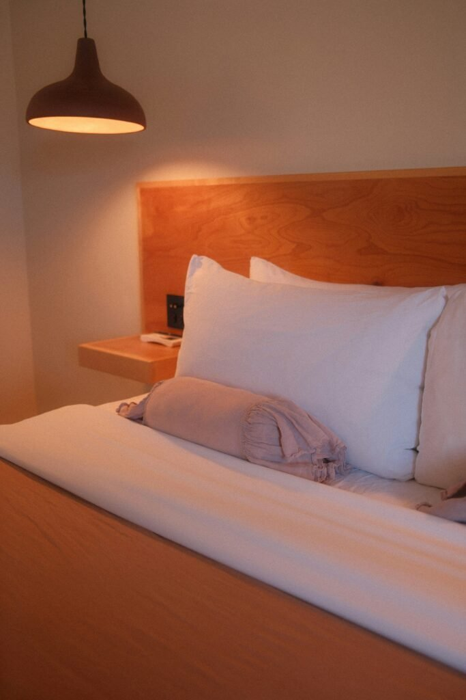
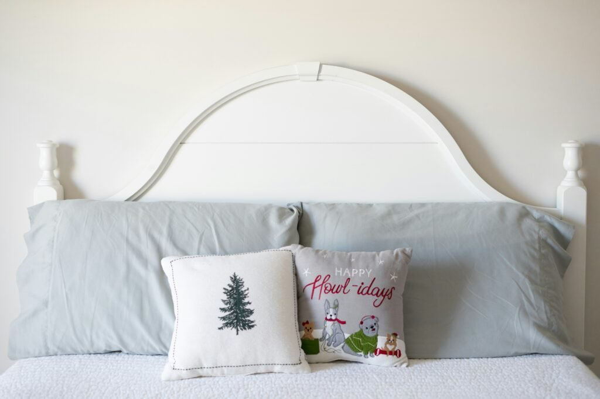
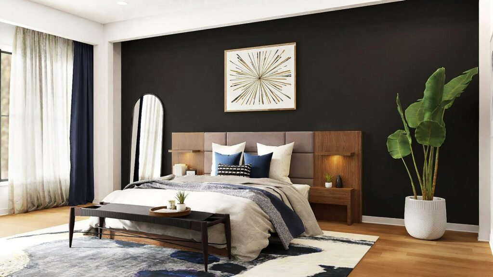
1. Soft, Ambient Flooring
A plush rug or warm-toned flooring underfoot adds comfort that's easy to overlook until a guest is walking across a cold floor barefoot at night.
This detail does a lot for the room's overall coziness relative to how little it actually costs to add.
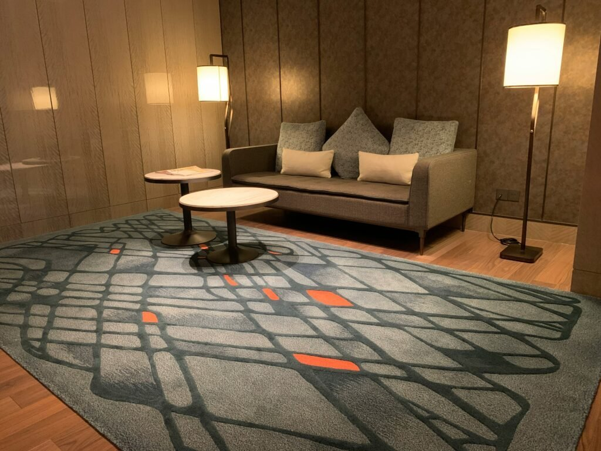
2. Smart Storage Solutions
Under-bed storage, a slim wardrobe, or a luggage rack all give a guest somewhere to actually unpack, rather than living out of a suitcase on the floor for the whole stay.
This is one of the most appreciated, least glamorous upgrades a guest room can get.
3. Cozy Seating Nooks
A small chair by the window, with a reading lamp nearby, gives a guest somewhere to sit besides the bed, a small detail with an outsized effect on how welcome the room feels overall.
This works even in a smaller guest room, as long as there's room for a single chair and a surface for a drink or book.
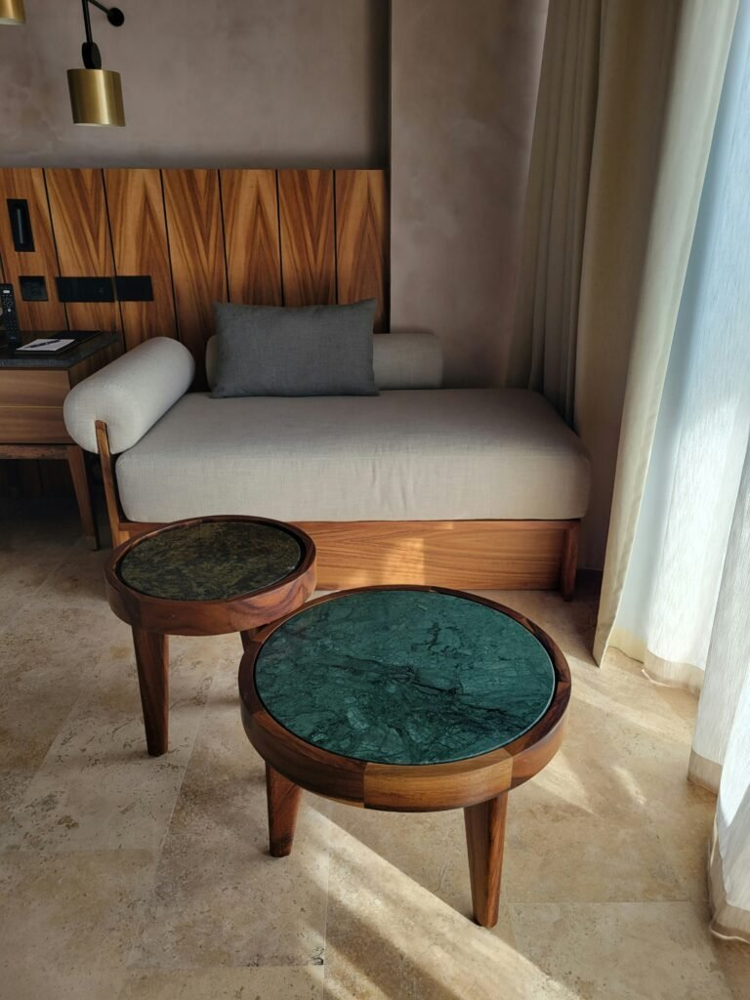
4. Natural Materials and Textures
Linen bedding, a jute rug, and wood furniture bring a grounded, organic feel that suits a restful guest room better than synthetic materials ever do.
This also tends to age well, avoiding the dated look that more trend-driven materials can fall into after a few years.

5. Minimal Clutter With Thoughtful Decor
A guest room with a few deliberate pieces, rather than every spare decor item in the house, reads as genuinely curated rather than like a storage overflow room.
This also makes the space feel more like an intentional retreat than a leftover corner of the home nobody planned.
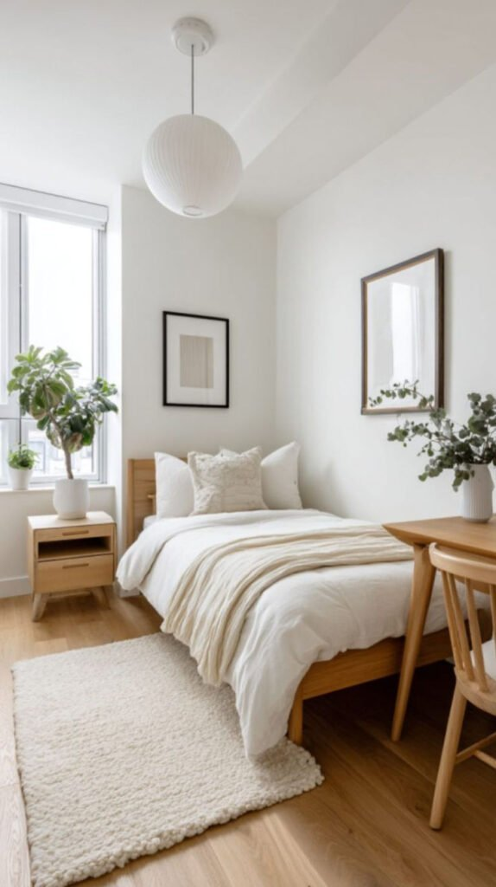
6. Smart Lighting for Mood and Function
A dimmer, a smart bulb, or a simple bedside lamp with adjustable brightness lets a guest control their own lighting without having to ask anyone for help.
This small independence matters more for guest comfort than most people account for when planning the room.
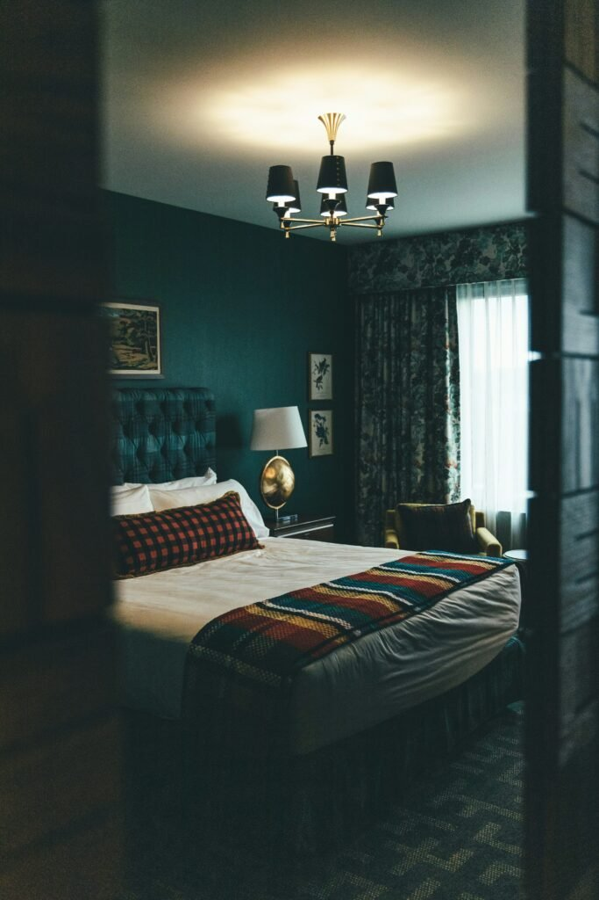
7. Personalized Accent Walls
A single wall in a considered color, texture, or wallpaper gives the guest room real character without overwhelming a space meant to feel calm.
This is one of the more popular ways guest rooms are getting individual personality instead of reading as a generic spare room.
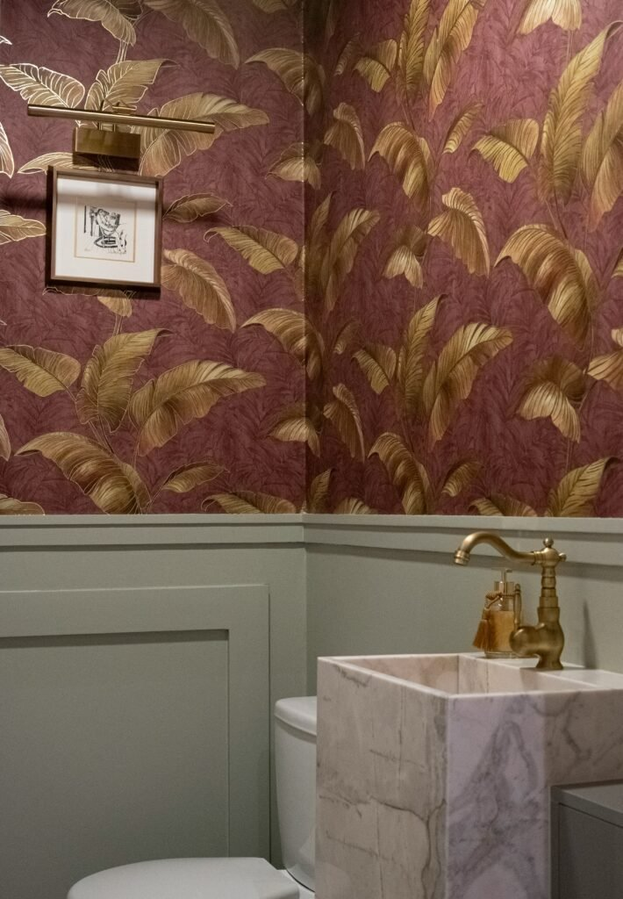
8. Warm, Neutral Color Palettes
A soft, warm neutral base reads as calming and universally comfortable, a safer, more restful choice than a bold color in a room meant for someone unfamiliar with the home.
This also makes the room easier to accessorize seasonally without ever needing to repaint.
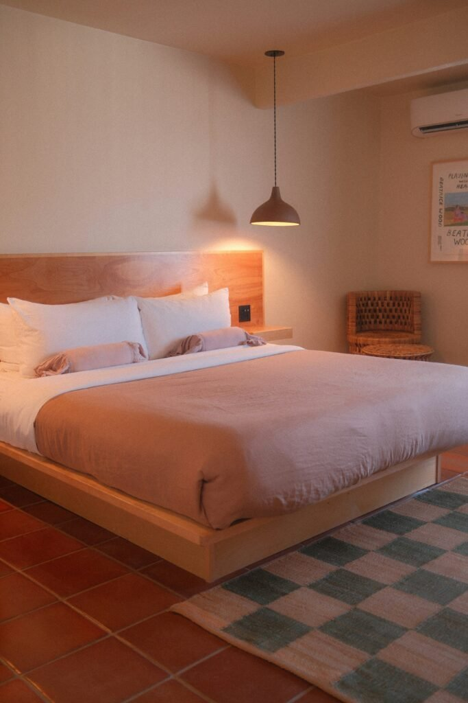
9. Multipurpose Furniture
A daybed that works as a sofa, a desk that doubles as a vanity, or a storage ottoman that also seats someone all let the guest room earn its keep the rest of the year too.
This matters more now than it used to, since fewer homes can dedicate a room purely to occasional guests without it serving another function most of the time.
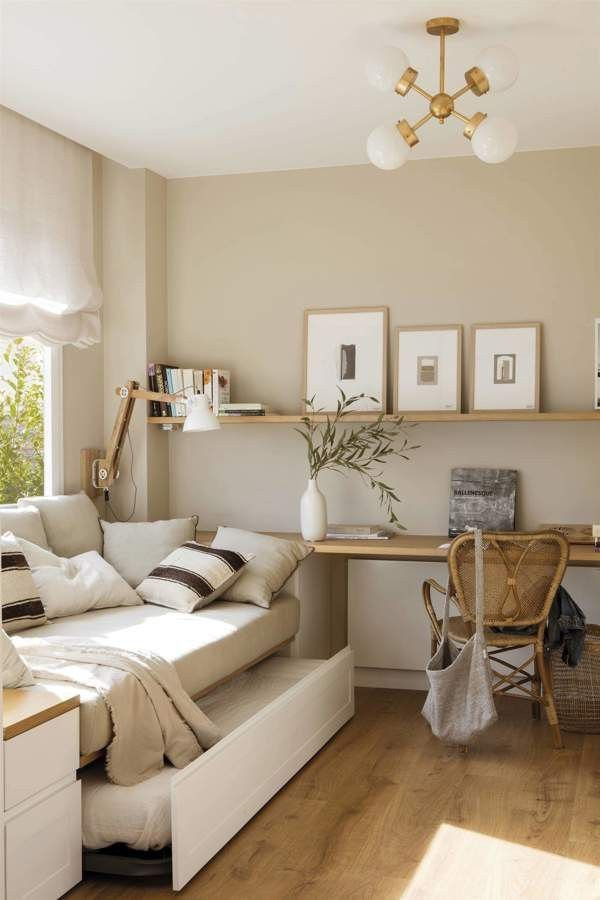
10. Layered Bedding for Maximum Comfort
A guest room bed with real layering, a duvet, a throw, several pillow types, signals genuine hospitality in a way a single flat comforter simply doesn't.
This is worth prioritizing over almost any other guest room upgrade, since it's the one thing every single guest directly experiences.
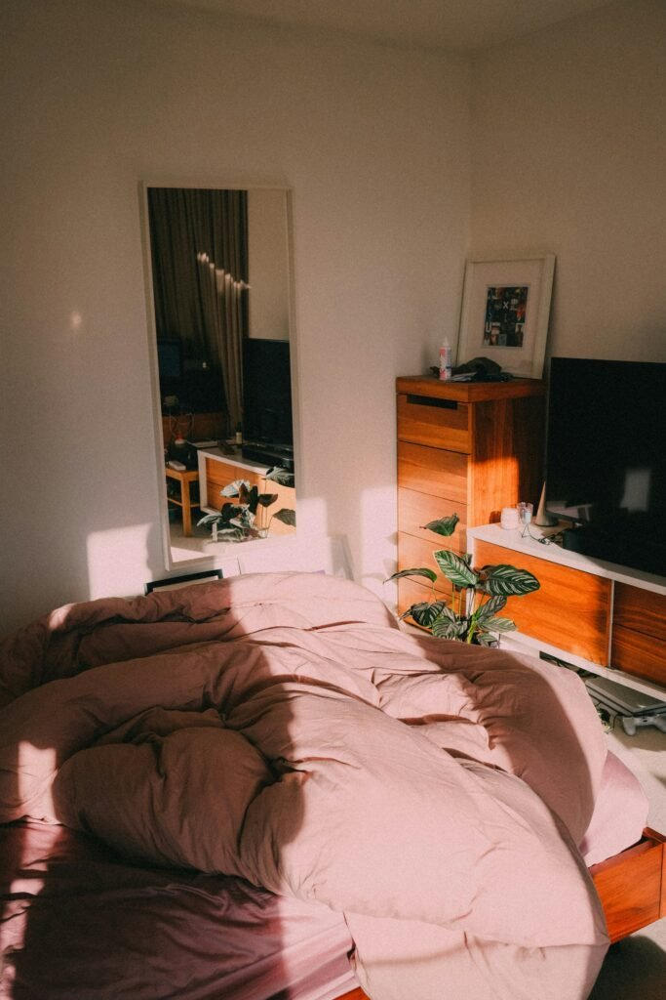
Final Thoughts
None of these 10 trends require redoing the guest room all at once.
Start with layered bedding and lighting, since both have the most direct effect on how a guest actually experiences the room from the moment they arrive.
A guest room that genuinely feels considered is one of the most generous small upgrades a home can make for the people who stay in it.